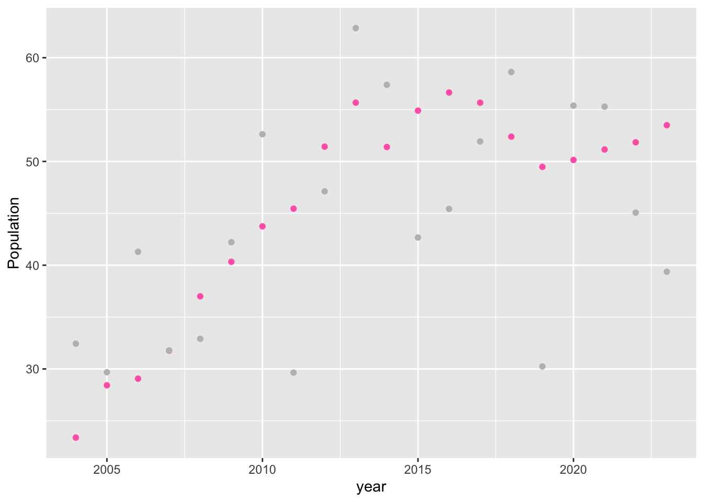
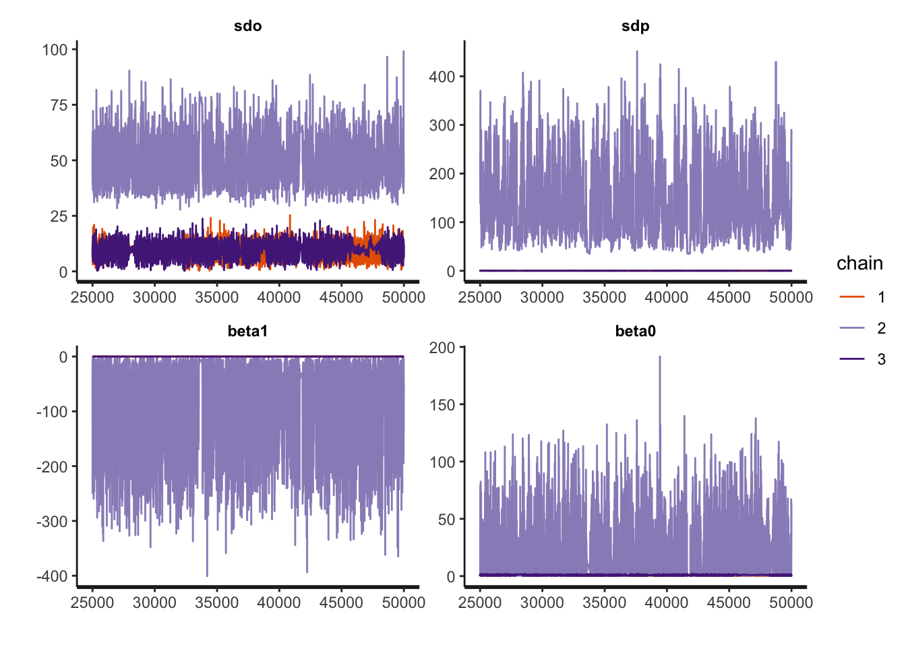
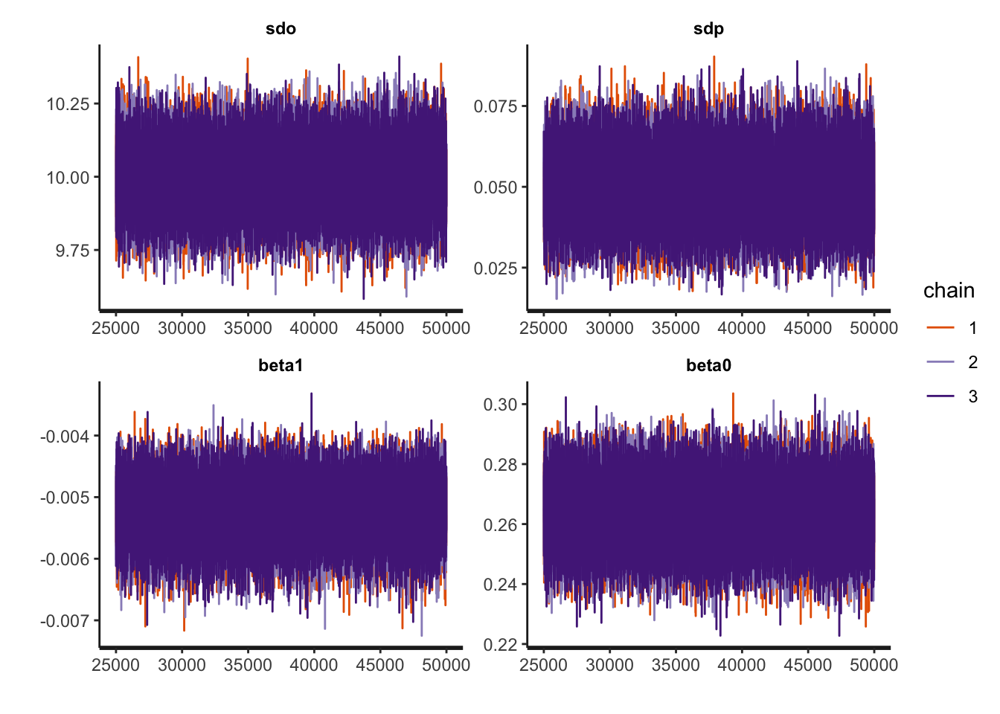
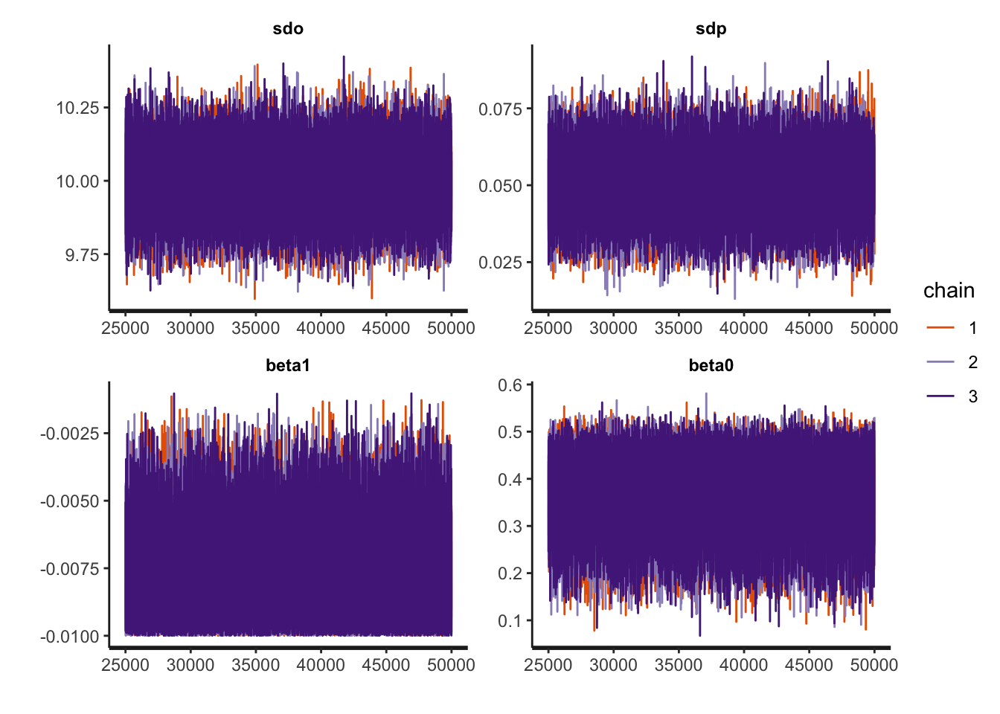
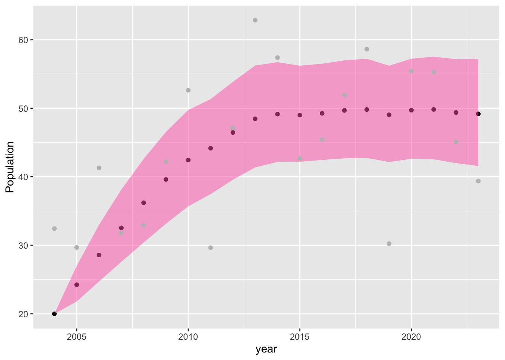
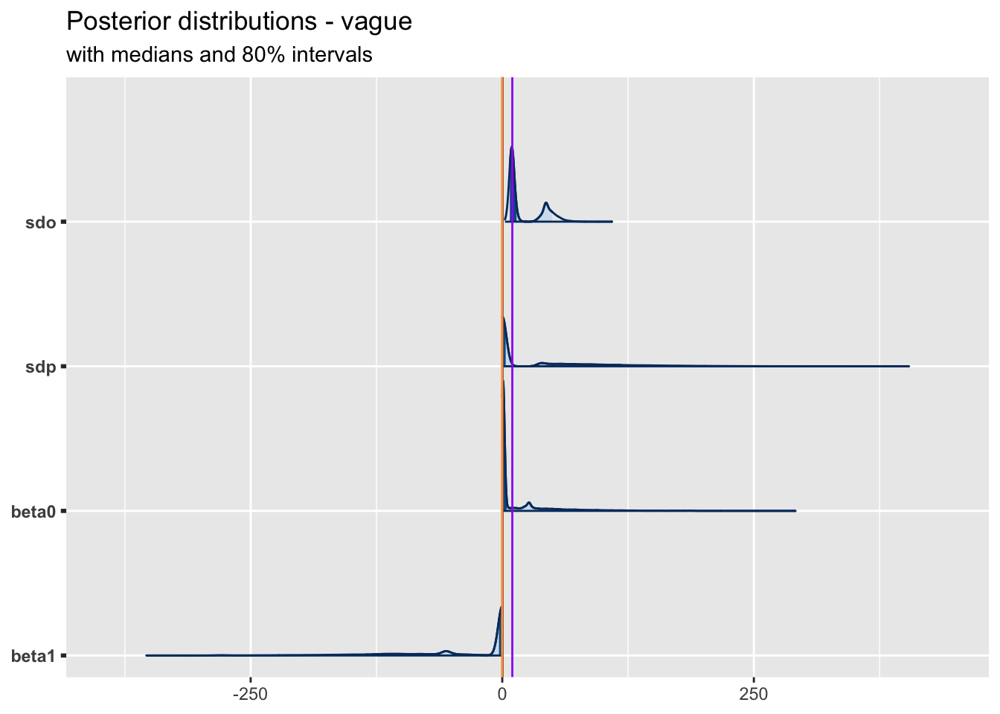
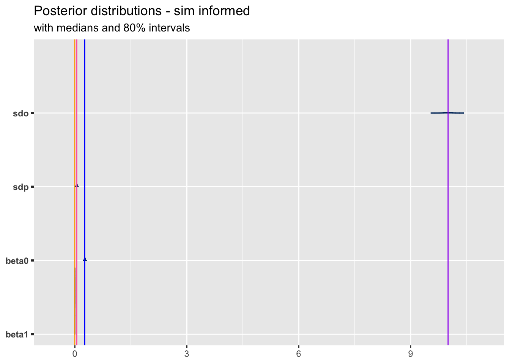
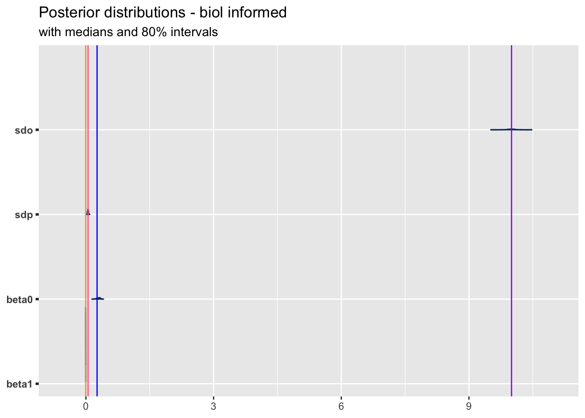

library(rstan)
library(bayesplot)
library(ggplot2)
# To run in parallel on multiple cores
options(mc.cores=parallel::detectCores())
# To avoid recompiling unchanged Stan program
rstan_options(auto_write=TRUE)
# Colours for plots
col_real <- "hotpink" # Real population trajectory
col_obs <- grey(0.2) # Observed population trajectorySSM
Ailene: Once we have final title we should change the title to the title of the paper + Supplementary Mat. XX. Same with authors. I think we should just use the same list/order as paper. I let you make the change.
Set up
Simulation: simple population model
To demonstrate the ease with which we can use Bayesian methods to include biological information to help fit complex population models, we will simulate the re-introduction of an extirpated species in a conservation area and use a population model, with and without additional biological information, to assess whether there is evidence that the population has reached carrying capacity. We will simulate that we have re-introduced in a conservation area 10 adult females and 10 adult males from an extirpated species in 2003, and we are monitoring their growth for the past 20 years to see if they have reached carrying capacity and to estimate what is that carrying capacity. To do so, we will use the state-space models for population described in Auger-Méthé et al. (2021). This model is based on one of the models Dennis and Taper (1994) and Jamieson and Brooks (2004) have proposed to include density dependence, biological stochasticiy, and measurement error in a single model. As it is a state-space model, it has two main equations. The equation describing the population trajectory is often referred to as the process equation, while the equation associated with modelling the error in survey is called the observation equation. Both are defined as follows:
Process equation: \(z_{t} = z_{t-1}\exp(\beta_0 + \beta_1 z_{t-1} + \epsilon_t), \;\; \epsilon_t \sim \text{N}(0, \sigma_p^2),\)
Observation equation: \(y_t = z_t + \eta_t, \;\; \eta_t \sim \text{N}(0,\sigma_{o}^2),\)
where \(z_t\) is the true population size as time \(t\), \(y_t\) is the observed number of individuals at time \(t\), \(\beta_0\) is the population growth rate when the population is not affected by population density, \(\beta_1\) determines how much the population growth rate decreases as a function of population density, \(\sigma_p\) is the standard deviation of the process equation (it represents the biological stochasticity), and \(\sigma_o\) represents the standard deviation of the observation error.
This species has a long life span (20+ years) and creates long term pairs that can produce maximum 2 offspring when in good conditions, and therefore could be able to almost double in size every year. However, here we simulate a situation where the conservation area does not allow the animal to fulfill its full growth and we simul by setting \(\beta_0 = \text{log}(1.3)\). We assumed when doing the yearly transects we can miss or double count individuals and simulate this by setting \(\sigma_o = 10\). We assume there is little adult mortality and that birth rate is the main source of biological stochasticity. Specfically, we set \(\sigma_p = 0.05\). Finally, we simulate the density dependence parameter by setting \(\beta_1 = -0.005\).
Below is the code to simulate two times series, the true population tracjectory of the 20 years (containg in z), and the observed counts over these years (contained in y).
# Create a vector that will keep track of the states
# It's of length T + 1 (+1 for t=0)
TT <- 20
z <- numeric(TT + 1)
# Population starts at 20 (number of individual re-introduced)
z[1] <- 20
# Standard deviation of the process variation
sdo <- 10
sdp <- 0.05
beta0 <- log(1.3)
beta1 <- -0.005
# Set the seed, so we can reproduce the results
set.seed(87687)
# For-loop that simulates the state through time, using i instead of t,
for(i in 1:TT){
# This is the process equation
z[i+1] <- z[i]*exp(beta0 + beta1*z[i] + rnorm(1, 0, sdp))
# Note that this index is shifted compared to equation in text,
# because we assume the first value to be at time 0
}
# Create a vector that will keep track of the observations
# It's of length T
y <- numeric(TT)
# Standard deviation of the observation error
# For t=1, ... T, add measurement error
# Remember that z[1] is t=0
y <- z[2:(TT+1)] + rnorm(TT, 0, sdo)Let’s visualize the two simulated time series.
monitoring <- data.frame(year = seq(2024-TT, length.out = TT), true = z[-1], obs = y)
ggplot() +
geom_point(data = monitoring, aes(y = true, x = year, colour = "Real")) +
geom_point(data = monitoring, aes(y = obs, x = year, colour = "Observed")) +
geom_line(data = monitoring, aes(y = true, x = year, colour = "Real")) +
geom_line(data = monitoring, aes(y = obs, x = year, colour = "Observed")) +
scale_color_manual(name = "Pop. trajctories",
values = c("Real" = col_real, "Observed" = col_obs)) +
ylab("Population/count") +
theme_bw()
We can see that due to observation error (i.e., the fact that the transect counts are imperfect) the observed trajectory is far more variable than the real population trajectory. In a real-life scenario, we would only have access to this messy observed trajectory and from looking at it would be hard to assess whether there is evidence that the population has reached carrying capacity.
Fit model
Now that we have created our data. Let’s fit a model to estimate the true population size. We will use rstan to fit a Bayesian version of the model to data. The first thing we want to do is set up the data to fit with the function stan:
dataStan <- list(y = y, TT = TT,
w0 = log(z[1]), # Starting population, 20 (number re-introduce)
sd0 = 0.0001) # Low sd for the first time step Vague priors
As this is a Bayesian model, we need to specify priors for all parameters (\(\sigma_o, \sigma_p, \beta_0, \beta_1\)).The baseline way to fit this model would be to assume we have no information on the values of these parameters and use vague priors. To demonstrate this approach, we define the priors for all four parameters as \(\text{N}(0,100)\). See file ssm_dens_vague.stan for exact model definition.
Ailene: I think it would be good to set the first value of the time series to 20. Do you know how to do this quickly in stan?
We can fit this model with vague priors using three chains of length 50000 as follow.
m.vague <- stan(file = "ssm_dens_vague.stan",
data = dataStan,
chains = 3, iter = 50000, seed="123")hash mismatch so recompiling; make sure Stan code ends with a blank lineWarning: There were 17674 divergent transitions after warmup. See
https://mc-stan.org/misc/warnings.html#divergent-transitions-after-warmup
to find out why this is a problem and how to eliminate them.Warning: There were 27 transitions after warmup that exceeded the maximum treedepth. Increase max_treedepth above 10. See
https://mc-stan.org/misc/warnings.html#maximum-treedepth-exceededWarning: There were 2 chains where the estimated Bayesian Fraction of Missing Information was low. See
https://mc-stan.org/misc/warnings.html#bfmi-lowWarning: Examine the pairs() plot to diagnose sampling problemsWarning: The largest R-hat is 1.79, indicating chains have not mixed.
Running the chains for more iterations may help. See
https://mc-stan.org/misc/warnings.html#r-hatWarning: Bulk Effective Samples Size (ESS) is too low, indicating posterior means and medians may be unreliable.
Running the chains for more iterations may help. See
https://mc-stan.org/misc/warnings.html#bulk-essWarning: Tail Effective Samples Size (ESS) is too low, indicating posterior variances and tail quantiles may be unreliable.
Running the chains for more iterations may help. See
https://mc-stan.org/misc/warnings.html#tail-essWe get lots of warnings, indicating that this model may be problematic for the data at hand.
We can look at the traceplots to further assess these issues.
traceplot(m.vague, pars=c("sdo", "sdp", "beta1", "beta0"))
We can see that the chains are not well mixed.
We would not recommend to use the results of this model, but we extract the information for comparison.
# Posterior
m.vague.post <- as.matrix(m.vague)
sdo.est.vague <- m.vague.post[,"sdo"]
sdp.est.vague <- m.vague.post[,"sdp"]
beta0.est.vague <- m.vague.post[,"beta0"]
beta1.est.vague <- m.vague.post[,"beta1"]It is not surprising that this model is associated with warnings. While state-space models are very useful models, they can have problem estimating simultaneously the parameters associated with the biological stochasticity and measurement error, especially with small datasets (Auger-Méthé et al. 2016, 2021).
Model check - using narrow priors based on simulation
It is often recommended to check the model with simulations (Auger-Méthé et al. 2016, 2021), and here to verify that this problem is not a coding issue or a fundamental problem, we fit the model with highly informed priors based on the parameter values used to simulate the data. Specifically, we use the following priors:
\(\sigma_o \sim \text{N}(10, 0.1)\),
\(\sigma_p \sim \text{N}(0.05, 0.01)\),
\(\beta_0 \sim \text{N}(\text{log}(1.3), 0.01)\), and
\(\beta_1 \sim \text{N}(-0.005, 0.001)\).
m.sim.informed <- stan(file = "ssm_dens_sim_informed.stan",
data = dataStan,
chains = 3, iter = 50000, seed="123")hash mismatch so recompiling; make sure Stan code ends with a blank lineIn this case there are no warning messages.
We further look at the traceplots.
traceplot(m.sim.informed, pars=c("sdo", "sdp", "beta1", "beta0"))
The three chains look well mixed.
We extract info.
m.sim.informed.post <- as.matrix(m.sim.informed)
sdo.est.sim.informed <- m.sim.informed.post[,"sdo"]
sdp.est.sim.informed <- m.sim.informed.post[,"sdp"]
beta0.est.sim.informed <- m.sim.informed.post[,"beta0"]
beta1.est.sim.informed <- m.sim.informed.post[,"beta1"]While the model fits well with these priors, in real life we do not know the exact values of the parameters and often the goal of the analysis is to estimate some or all of them. However, as explained in the next section, we often have biological information that can be easily used to create informed priors.
Informed priors based on biology
Here we create a model based on information researchers may have at hand.
Researchers often perform studies to assess the accuracy of their transect surveys. Here, we assume that we have performed such an assessment (e.g., using the fact that all recaptured individuals were marked to assess the accuracy of the survey) and that \(\sigma_o\) was estimated to be 10, and that estimate is reliable, so as a prior we use a normal distribution with mean 10 and standard deviation 0.1.
Researchers also often have information based on other population. Here, we assume that previous work has shown that the mortality of adults is low, especially in conserved areas where there is no harvest, and that the birth rate varies about 5%, and thus set the prior of \(\sigma_o\) as \(\text{N}(0.05, 0.01)\).
We know the population is increasing and we know based on the birth rate (the species can produce maximum two offspring per year) that it can maximum double each year. Thus, we restrict the value of \(\beta_0\) to be between log(1) (stays the same) and log(2) (doubles) by using \(\text{Uniform}(\text{log}(1), \text{log}(2))\).
Researchers also often have access to estimates from other populations of the same species. Here, we assume that we have estimates for the density dependence parameters from the same species that range from -0.007 and -0.003, and thus we use a prior distribution for \(\beta_1\) of \(\text{Uniform}(-0.007,-0.003)\). See ssm_dens_biol_informed.stan for detailed model.
We note that these are just simplified examples of ways to include biological information as priors, other methods and priors could/should be used in many circumstances.
m.biol.informed <- stan(file = "ssm_dens_biol_informed.stan",
data = dataStan,
chains = 3, iter = 50000, seed= "123")Warning: There were 48756 divergent transitions after warmup. See
https://mc-stan.org/misc/warnings.html#divergent-transitions-after-warmup
to find out why this is a problem and how to eliminate them.Warning: Examine the pairs() plot to diagnose sampling problemsAilene: can you help me fix the issue with these warnings. This models clearly fits ok. But can’t figure out how to fix it so as to remove these warnings.
Look at traceplots.
traceplot(m.biol.informed, pars=c("sdo", "sdp", "beta1", "beta0"))
Looks good to me.
m.informed.post <- as.matrix(m.biol.informed)
sdo.est.informed <- m.informed.post[,"sdo"]
sdp.est.informed <- m.informed.post[,"sdp"]
beta0.est.informed <- m.informed.post[,"beta0"]
beta1.est.informed <- m.informed.post[,"beta1"]Plot population estimate
pop.est.informed <- exp(rstan::extract(m.biol.informed, pars = "w")[[1]])
pop.est.informed.sum <- data.frame(year= seq(2024-TT, length.out = TT), pop.mean = colMeans(pop.est.informed),
t(apply(pop.est.informed, 2, quantile, probs=c(0.025, 0.975))))
colnames(pop.est.informed.sum)[3:4] <- c("lower", "upper")
ggplot(data=pop.est.informed.sum, aes(x=year, y=pop.mean)) +
geom_point() +
geom_ribbon(data=pop.est.informed.sum, aes(ymin = lower, ymax = upper), fill= alpha("hotpink", 0.5)) +
geom_point(data = monitoring, aes(y= obs, x = year), col="grey") +
ylab("Population")
Compare models
Plot posterior
plot_title <- ggtitle("Posterior distributions - vague",
"with medians and 80% intervals")
mcmc_areas(m.vague.post,
pars = c("sdo", "sdp", "beta0", "beta1"),
prob = 0.8) + plot_title +
geom_vline(aes(xintercept = sdp), col="hotpink") +
geom_vline(aes(xintercept = sdo), col="purple") +
geom_vline(aes(xintercept = beta0), col="blue") +
geom_vline(aes(xintercept = beta1), col="orange") 
plot_title <- ggtitle("Posterior distributions - sim informed",
"with medians and 80% intervals")
mcmc_areas(m.sim.informed.post,
pars = c("sdo", "sdp", "beta0", "beta1"),
prob = 0.8) + plot_title +
geom_vline(aes(xintercept = sdp), col="hotpink") +
geom_vline(aes(xintercept = sdo), col="purple") +
geom_vline(aes(xintercept = beta0), col="blue") +
geom_vline(aes(xintercept = beta1), col="orange") 
plot_title <- ggtitle("Posterior distributions - biol informed",
"with medians and 80% intervals")
mcmc_areas(m.informed.post,
pars = c("sdo", "sdp", "beta0", "beta1"),
prob = 0.8) + plot_title +
geom_vline(aes(xintercept = sdp), col="hotpink") +
geom_vline(aes(xintercept = sdo), col="purple") +
geom_vline(aes(xintercept = beta0), col="blue") +
geom_vline(aes(xintercept = beta1), col="orange") 
Comparing just vague to biol informed
data.frame(sdo = c(sdo, mean(sdo.est.vague), mean(sdo.est.informed)),
sdo.025 = c(NA, quantile(sdo.est.vague, probs = 0.025), quantile(sdo.est.informed, probs = 0.025)),
sdo.975 = c(NA, quantile(sdo.est.vague, probs = 0.975), quantile(sdo.est.informed, probs = 0.975)),
sdp = c(sdp, mean(sdp.est.vague), mean(sdp.est.informed)),
sdp.025 = c(NA, quantile(sdp.est.vague, probs = 0.025), quantile(sdp.est.informed, probs = 0.025)),
sdp.975 = c(NA, quantile(sdp.est.vague, probs = 0.975), quantile(sdp.est.informed, probs = 0.975)),
beta0 = c(beta0, mean(beta0.est.vague), mean(beta0.est.informed)),
beta0.025 = c(NA, quantile(beta0.est.vague, probs = 0.025), quantile(beta0.est.informed, probs = 0.025)),
beta0.975 = c(NA, quantile(beta0.est.vague, probs = 0.975), quantile(beta0.est.informed, probs = 0.975)),
beta1 = c(beta1, mean(beta1.est.vague), mean(beta1.est.informed)),
beta1.025 = c(NA, quantile(beta1.est.vague, probs = 0.025), quantile(beta1.est.informed, probs = 0.025)),
beta1.975 = c(NA, quantile(beta1.est.vague, probs = 0.975), quantile(beta1.est.informed, probs = 0.975))) sdo sdo.025 sdo.975 sdp sdp.025 sdp.975 beta0
1 10.000000 NA NA 0.05000000 NA NA 0.2623643
2 22.153642 6.084894 58.59138 32.95195217 0.01211790 186.60694557 16.5446045
3 9.998692 9.803574 10.19633 0.04932161 0.02990143 0.06889056 0.2939805
beta0.025 beta0.975 beta1 beta1.025 beta1.975
1 NA NA -0.005000000 NA NA
2 0.3180593 116.4336071 -35.287728644 -2.023321e+02 -0.006482450
3 0.1965356 0.3640563 -0.005801763 -6.953967e-03 -0.003617147This looks good to me.
Session info
sessionInfo()R version 4.3.2 (2023-10-31)
Platform: aarch64-apple-darwin20 (64-bit)
Running under: macOS Sonoma 14.6.1
Matrix products: default
BLAS: /Library/Frameworks/R.framework/Versions/4.3-arm64/Resources/lib/libRblas.0.dylib
LAPACK: /Library/Frameworks/R.framework/Versions/4.3-arm64/Resources/lib/libRlapack.dylib; LAPACK version 3.11.0
locale:
[1] en_US.UTF-8/en_US.UTF-8/en_US.UTF-8/C/en_US.UTF-8/en_US.UTF-8
time zone: America/Vancouver
tzcode source: internal
attached base packages:
[1] stats graphics grDevices utils datasets methods base
other attached packages:
[1] ggplot2_3.5.1 bayesplot_1.11.1 rstan_2.32.6
[4] StanHeaders_2.32.10
loaded via a namespace (and not attached):
[1] tensorA_0.36.2.1 utf8_1.2.4 generics_0.1.3
[4] stringi_1.8.1 digest_0.6.33 magrittr_2.0.3
[7] evaluate_0.23 grid_4.3.2 fastmap_1.1.1
[10] plyr_1.8.9 jsonlite_1.8.7 processx_3.8.2
[13] pkgbuild_1.4.2 backports_1.4.1 ps_1.7.5
[16] gridExtra_2.3 fansi_1.0.5 QuickJSR_1.5.1
[19] scales_1.3.0 codetools_0.2-19 abind_1.4-5
[22] cli_3.6.3 rlang_1.1.4 crayon_1.5.2
[25] munsell_0.5.0 withr_2.5.2 yaml_2.3.7
[28] tools_4.3.2 inline_0.3.19 parallel_4.3.2
[31] reshape2_1.4.4 checkmate_2.3.1 dplyr_1.1.4
[34] colorspace_2.1-0 curl_5.1.0 posterior_1.6.0
[37] vctrs_0.6.4 R6_2.5.1 ggridges_0.5.6
[40] matrixStats_1.1.0 stats4_4.3.2 lifecycle_1.0.4
[43] stringr_1.5.1 V8_6.0.0 htmlwidgets_1.6.4
[46] pkgconfig_2.0.3 callr_3.7.3 RcppParallel_5.1.9
[49] pillar_1.9.0 gtable_0.3.4 loo_2.8.0
[52] glue_1.8.0 Rcpp_1.0.11 xfun_0.49
[55] tibble_3.2.1 tidyselect_1.2.1 rstudioapi_0.15.0
[58] knitr_1.45 farver_2.1.1 htmltools_0.5.8.1
[61] labeling_0.4.3 rmarkdown_2.28 compiler_4.3.2
[64] prettyunits_1.2.0 distributional_0.5.0Literature cited
Auger-Méthé, M., K. Newman, D. Cole, F. Empacher, R. Gryba, A. A. King, V. Leos-Barajas, J. Mills Flemming, A. Nielsen, G. Petris, and L. Thomas. 2021. A guide to state–space modeling of ecological time series. Ecological Monographs 91:e01470.
Auger-Méthé, M., C. Field, C. M. Albertsen, A. E. Derocher, M. A. Lewis, I. D. Jonsen, and J. Mills Flemming. 2016. State–space models’ dirty little secrets: even simple linear Gaussian models can have estimation problems. Scientific Reports 6:26677.
Dennis, B., and M. L. Taper. 1994. Density dependence in time series observations of natural populations: estimation and testing. Ecological Monographs 64:205–224.
Jamieson, L. E., and S. P. Brooks. 2004. Density dependence in North American ducks. Animal Biodiversity and Conservation 27:113–128.